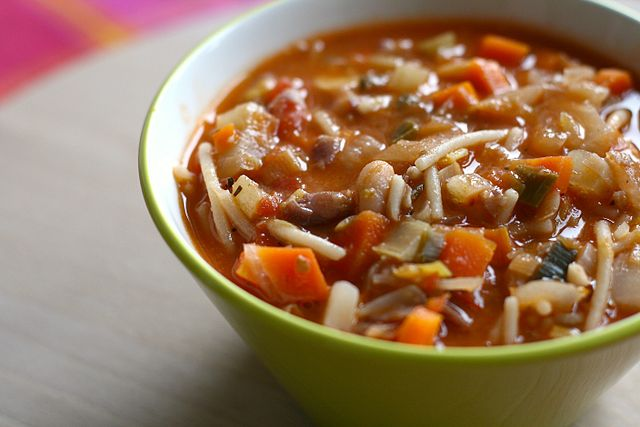

A hearty, healty warming bowl of Minestrone Soup
Minestrone soup is a vibrant and nourishing Italian classic, packed with seasonal vegetables, pasta, and beans. It’s ideal as a warming lunch or light supper, and it’s easy to adapt based on what you have to hand. This recipe gives you a satisfying and flavourful soup that’s also suitable for vegetarians.